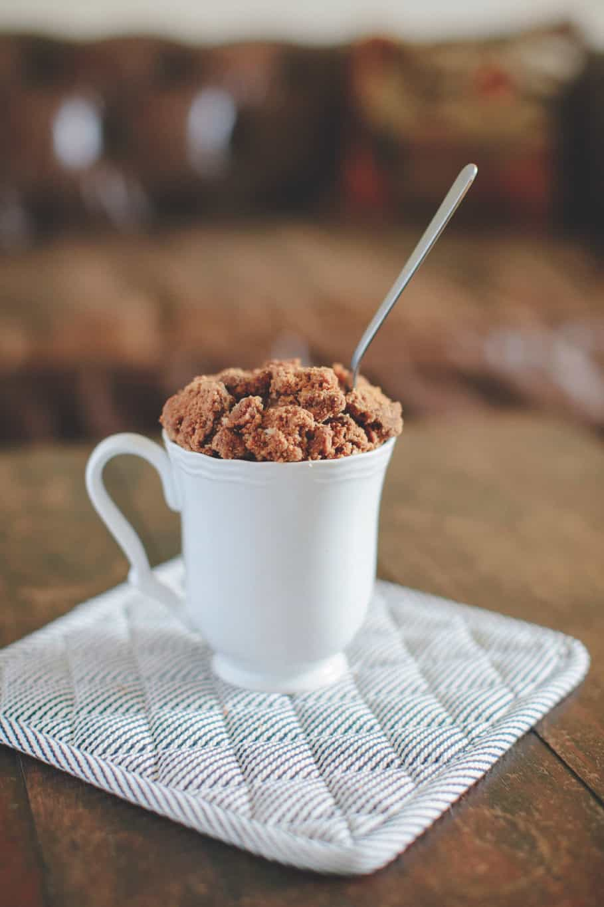

Affogato
El affogato es un postre italiano que consta de una bocha de helado de crema americana o vainilla y café
espresso recién hecho. Te contamos cómo hacerlo con uno de nuestros granos selectos.
Ingredientes
- 1 bocha de helado
- 1 café espresso con nuestro café ingresa cafe
Preparación
- En un vaso o taza colocar la bocha de helado.
- Preparar un café espresso y volcarlo sobre el helado. Servir inmediatamente.

Tiramisú
¿Te gustaría preparar un tiramisú italiano y fácil? El tiramisú es una de las recetas de postres más
famosas de la cocina italiana.
Ingredientes
- ¾ taza o 160gr de azúcar
- 400 cc de crema de leche o nata
- 600 gr de mascarpone (aquí les dejo mi receta de mascarpone casero)
- 7 yemas
- 1 medida de cognac o amaretto (opcional)
- 1 taza de café
- 2 paquetes de vainillas o bizcocho de soletilla
- Cacao amargo y chocolate semi amargo para la terminación.
Preparación
Preparamos el café y lo ponemos a enfriar. Por un lado, batimos las claras a punto nieve y por el otro
las yemas con el azúcar. Incorporamos el mascarpone.
Luego mojamos las vainillas en el café frío, colocándolas en un molde cuadrado o rectangular, y vamos
intercalando una capa de crema y una de vainillas. Terminamos con cacao en polvo y chocolate rallado para
decorar.

Mugcake de café
El mug cake se trata de un bizcocho en taza que se prepara en el microondas y en pocos minutos, para consumir en forma inmediata.
Ingredientes
- 1 huevo
- 2 cdas (30 ml) de leche entera
- 4 cdas (32 g) de harina de trigo
- 1 cda (15 ml) de aceite comestible
- 2 cda (30 ml) de café espresso
- ¼ cdta (1,25 g) de polvo de hornear
- 2 cdta (8 g) de azúcar morena
- 1 pizca de sal
Preparación
- En una taza grande de café apta para microondas mezcle el huevo, el aceite y la leche.
- Añada el café previamente prepado a la mezcla.
- Agregue la harina, el polvo de hornear, el azúcar y la sal y continúe batiendo hasta que no queden grumos.
- Cocine todo en el microondas durante 50 o 60 segundos. Esto dependerá de la potencia de su microondas, es mejor no pasarse con el tiempo o el pastel podría quemarse o quedarse seco.
- Cubrir con un toque de crema batida fresca y espolvoree un poco de cacao para decorarlo como un café capuchino.